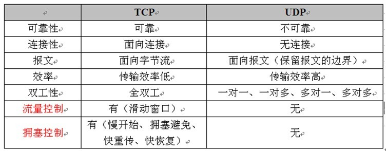
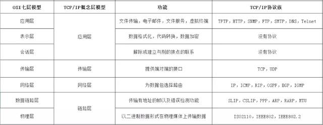

必备知识点（二）
计算机网络
1. TCP UDP（都属于传输层）
(1)定义
TCP：传输控制协议（TCP，Transmission Control Protocol）是一种面向连接的、可靠的、基于字节流的传输层通信协议
优点：可靠，稳定 TCP的可靠体现在TCP在传递数据之前，会有三次握手来建立连接，而且在数据传递时，有确认、窗口、重传、拥塞控制机制，在数据传完后，还会断开连接用来节约系统资源。
缺点： 慢，效率低，占用系统资源高，易被攻击 TCP在传递数据之前，要先建连接，这会消耗时间，而且在数据传递时，确认机制、重传机制、拥塞控制机制等都会消耗大量的时间，而且要在每台设备上维护所有的传输连接，事实上，每个连接都会占用系统的CPU、内存等硬件资源。 而且，因为TCP有确认机制、三次握手机制，这些也导致TCP容易被人利用，实现DOS、DDOS、CC等攻击
UDP： UDP 为应用程序提供了一种无需建立连接就可以发送封装的 IP 数据包的方法
优点：快，比TCP稍安全 UDP没有TCP的握手、确认、窗口、重传、拥塞控制等机制，UDP是一个无状态的传输协议，所以它在传递数据时非常快。没有TCP的这些机制，UDP较TCP被攻击者利用的漏洞就要少一些。
缺点： 不可靠，不稳定 因为UDP没有TCP那些可靠的机制，在数据传递时，如果网络质量不好，就会很容易丢包
(2)区别
① TCP面向连接（如打电话要先拨号建立连接）;UDP是无连接的，即发送数据之前不需要建立连接
② TCP提供可靠的服务。也就是说，通过TCP连接传送的数据，无差错，不丢失，不重复，且按序到达;UDP尽最大努力交付，即不保证可靠交付
③ TCP面向字节流，实际上是TCP把数据看成一连串无结构的字节流;UDP是面向报文的。
UDP没有拥塞控制，因此网络出现拥塞不会使源主机的发送速率降低（对实时应用很有用，如IP电话，实时视频会议等）
④ 每一条TCP连接只能是点到点的;UDP支持一对一，一对多，多对一和多对多的交互通信
⑤ TCP首部开销20字节;UDP的首部开销小，只有8个字节
⑥ TCP的逻辑通信信道是全双工的可靠信道，UDP则是不可靠信道

PS：
面向报文的传输方式是应用层交给UDP多长的报文，UDP就照样发送，即一次发送一个报文。因此，应用程序必须选择合适大小的报文。若报文太长，则IP层需要分片，降低效率。若太短，会是IP太小。UDP对应用层交下来的报文，既不合并，也不拆分，而是保留这些报文的边界。
面向字节流的话，虽然应用程序和TCP的交互是一次一个数据块（大小不等），但TCP把应用程序看成是一连串的无结构的字节流。TCP有一个缓冲，当应用程序传送的数据块太长，TCP就可以把它划分短一些再传送。如果应用程序一次只发送一个字节，TCP也可以等待积累有足够多的字节后再构成报文段发送出去。
(3)TCP怎么保证可靠传输
校验和
计算方式：在数据传输的过程中，将发送的数据段都当做一个16位的整数。将这些整数加起来。并且前面的进位不能丢弃，补在后面，最后取反，得到校验和。
发送方：在发送数据之前计算检验和，并进行校验和的填充。
接收方：收到数据后，对数据以同样的方式进行计算，求出校验和，与发送方的进行比对。
注：如果接收方比对校验和与发送方不一致，那么数据一定传输有误。但是如果接收方比对校验和与发送方一致，数据不一定传输成功
确认应答与序列号
序列号：TCP传输时将每个字节的数据都进行了编号，这就是序列号。
确认应答：TCP传输的过程中，每次接收方收到数据后，都会对传输方进行确认应答。也就是发送ACK报文。这个ACK报文当中带有对应的确认序列号，告诉发送方，接收到了哪些数据，下一次的数
注：序列号的作用不仅仅是应答的作用，有了序列号能够将接收到的数据根据序列号排序，并且去掉重复序列号的数据。这也是TCP传输可靠性的保证之一。
超时重传
在进行TCP传输时，由于确认应答与序列号机制，也就是说发送方发送一部分数据后，都会等待接收方发送的ACK报文，并解析ACK报文，判断数据是否传输成功。如果发送方发送完数据后，迟迟没有等到接收方的ACK报文，发生这种情况会有两个原因：
① 数据在传输过程中由于网络原因等直接全体丢包，接收方根本没有接收到。
② 接收方接收到了响应的数据，但是发送的ACK报文响应却由于网络原因丢包了。
为了解决以上情况便产生了超时重传机制。简单理解就是发送方在发送完数据后等待一个时间没有接收到ACK报文，那么对刚才发送的数据进行重新发送。如果是由于①造成的，接收方收到二次重发的数据后，便进行ACK应答；如果是②造成的，接收方发现接收的数据已存在（判断存在的根据就是序列号，所以上面说序列号还有去除重复数据的作用），那么直接丢弃，仍旧发送ACK应答。
连接管理
三次握手和四次挥手，稍后细说
流量控制
接收端要对接收到的数据进行处理，如果发送端的发送速度太快，接收端来不及处理，导致接收端的结束缓冲区很快的填充满了。此时如果发送端仍旧发送数据，那么接下来发送的数据便可能发生丢包，继而导致丢包的一系列连锁反应。而TCP根据接收端对数据的处理能力，决定发送端的发送速度，这个机制就是流量控制。
注：在TCP协议的报头信息当中，有一个16位字段的窗口大小。在介绍这个窗口大小时我们知道，窗口大小的内容实际上是接收端接收数据缓冲区的剩余大小。这个数字越大，证明接收端接收缓冲区的剩余空间越大，网络的吞吐量越大。接收端会在确认应答发送ACK报文时，将自己的即时窗口大小填入，并跟随ACK报文一起发送过去。而发送方根据ACK报文里的窗口大小的值的改变进而改变自己的发送速度。如果接收到窗口大小的值为0，那么发送方将停止发送数据。并定期的向接收端发送窗口探测数据段，让接收端把窗口大小告诉发送端。
拥塞控制
TCP传输的过程中，发送端开始发送数据的时候，如果刚开始就发送大量的数据，那么就可能造成一些问题。网络可能在开始的时候就很拥堵，如果给网络中在扔出大量数据，那么这个拥堵就会加剧。拥堵的加剧就会产生大量的丢包，就对大量的超时重传，严重影响传输。
所以TCP引入了慢启动的机制，在开始发送数据时，先发送少量的数据探路。探清当前的网络状态如何，再决定多大的速度进行传输。这时候就引入一个叫做拥塞窗口的概念。发送刚开始定义拥塞窗口为 1，每次收到ACK应答，拥塞窗口加 1。在发送数据之前，首先将拥塞窗口与接收端反馈的窗口大小比对，取较小的值作为实际发送的窗口。
拥塞窗口的增长是指数级别的。慢启动的机制只是说明在开始的时候发送的少，发送的慢，但是增长的速度是非常快的。为了控制拥塞窗口的增长，不能使拥塞窗口单纯的加倍，设置一个拥塞窗口的阈值，当拥塞窗口大小超过阈值时，不能再按照指数来增长，而是线性的增长。在慢启动开始的时候，慢启动的阈值等于窗口的最大值，一旦造成网络拥塞，发生超时重传时，慢启动的阈值会为原来的一半（这里的原来指的是发生网络拥塞时拥塞窗口的大小），同时拥塞窗口重置为 1。
2. 三次握手四次挥手
三次握手
过程

B的TCP服务器进程先创建传输控制块TCB，准备接受客户进程的连接请求。然后服务器进程就处于LISTEN（收听）状态，等待客户的连接请求。若有，则作出响应。
① 第一次握手：A的TCP客户进程也是首先创建传输控制块TCB，然后向B发出连接请求报文段，（首部的同步位SYN=1，初始序号seq=x），（SYN=1的报文段不能携带数据）但要消耗掉一个序号，此时TCP客户进程进入SYN-SENT（同步已发送）状态。
② 第二次握手：B收到连接请求报文段后，如同意建立连接，则向A发送确认，在确认报文段中（SYN=1，ACK=1，确认号ack=x+1，初始序号seq=y），测试TCP服务器进程进入SYN-RCVD（同步收到）状态；
③ 第三次握手：TCP客户进程收到B的确认后，要向B给出确认报文段（ACK=1，确认号ack=y+1，序号seq=x+1）（初始为seq=x，第二个报文段所以要+1），ACK报文段可以携带数据，不携带数据则不消耗序号。TCP连接已经建立，A进入ESTABLISHED（已建立连接）。
当B收到A的确认后，也进入ESTABLISHED状态。
为什么采用三次握手（也就是说为什么要在A最后还要再发送一次确认）
是为了防止已经失效的请求报文端，再次传到B，因而产生错误。
正常情况
client发送了连接请求，但是请求报文因为种种原因丢失而未确认。于是A超时重传，再一次发送请求连接报文。server收到了，然后再发送请求确认报文，并最终完成client与server的连接。数据传输结束后，释放连接。这个过程中，client一共发送了两个请求连接报文段，第一个丢失，第二个到达server。
异常情况
client发出的第一个连接请求报文段并没有丢失，而是在某个网络结点长时间的滞留了，以致延误到连接释放以后的某个时间才到达server。本来这是一个早已失效的报文段。但server收到此失效的连接请求报文段后，就误认为是client再次发出的一个新的连接请求。于是就向client发出确认报文段，同意建立连接。假设不采用三次握手，那么只要server发出确认，新的连接就建立了。由于现在client并没有发出建立连接的请求，因此不会理睬server的确认，也不会向server发送数据。但server却以为新的运输连接已经建立，并一直等待client发来数据。这样，server的很多资源就白白浪费掉了。
因此采用三次握手的办法可以防止上述现象发生。
四次挥手
四次挥手

① A的应用进程先向其TCP发出连接释放报文段（FIN=1，序号seq=u），并停止再发送数据，主动关闭TCP连接，进入FIN-WAIT-1（终止等待1）状态，等待B的确认。
② B收到连接释放报文段后即发出确认报文段，（ACK=1，确认号ack=u+1，序号seq=v），B进入CLOSE-WAIT（关闭等待）状态，此时的TCP处于半关闭状态，A到B的连接释放。
③ A收到B的确认后，进入FIN-WAIT-2（终止等待2）状态，等待B发出的连接释放报文段。
④ B没有要向A发出的数据，B发出连接释放报文段（FIN=1，ACK=1，序号seq=w，确认号ack=u+1），B进入LAST-ACK（最后确认）状态，等待A的确认。
⑤ A收到B的连接释放报文段后，对此发出确认报文段（ACK=1，seq=u+1，ack=w+1），A进入TIME-WAIT（时间等待）状态。此时TCP未释放掉，需要经过时间等待计时器设置的时间2MSL后，A才进入CLOSED状态。
为什么采用四次挥手
客户端发送FIN后，进入终止等待状态，服务器收到客户端连接释放报文段后，就立即给客户端发送确认，服务器就进入CLOSE_WAIT状态，此时TCP服务器进程就通知高层应用进程，因而从客户端到服务器的连接就释放了。此时是“半关闭状态”，即客户端不可以发送给服务器，服务器可以发送给客户端。
此时，如果服务器没有数据报发送给客户端，其应用程序就通知TCP释放连接，然后发送给客户端连接释放数据报，并等待确认。客户端发送确认后，进入TIME_WAIT状态，但是此时TCP连接还没有释放，然后经过等待计时器设置的2MSL后，才进入到CLOSE状态。
为什么TIME_WAIT状态需要经过2MSL(最大报文段生存时间)才能返回到CLOSE状态？
2MSL是指两倍的MSL(Maximum Segment Lifetime)。MSL指一个片段在网络中最大的存活时间，2MSL就是一个发送和一个回复所需的最大时间。
一切顺利情况下，四个报文都发送完毕，我们可以直接进入CLOSE状态了，但是有时网络是不可靠的，因此可能最后一个ACK丢失。所以TIME_WAIT状态就是用来重发可能丢失的ACK报文。
在Client发送出最后的ACK回复，但该ACK可能丢失。Server如果没有收到ACK，将不断重复发送FIN片段。所以Client不能立即关闭，它必须确认Server接收到了该ACK。Client会在发送出ACK之后进入到TIME_WAIT状态。Client会设置一个计时器，等待2MSL的时间。如果在该时间内再次收到FIN，那么Client会重发ACK并再次等待2MSL。如果直到2MSL，Client都没有再次收到FIN，那么Client推断ACK已经被成功接收，则结束TCP连接。
总结（为什么采用三次握手四次挥手）
因为当Server端收到Client端的SYN连接请求报文后，可以直接发送SYN+ACK报文。其中ACK报文是用来应答的，SYN报文是用来同步的。但是关闭连接时，当Server端收到FIN报文时，很可能并不会立即关闭SOCKET，所以只能先回复一个ACK报文，告诉Client端，”你发的FIN报文我收到了”。只有等到我Server端所有的报文都发送完了，我才能发送FIN报文，因此不能一起发送。故需要四步握手。
3. 如果已经建立了连接，但是客户端突然出现故障了怎么办
TCP设有一个保活计时器，如果客户端如果出现故障，服务器则不能一直等下去，白白浪费资源。服务器每收到一次客户端的请求后都会重新复位这个计时器，时间通常是设置为2小时，若两小时还没有收到客户端的任何数据，服务器就会发送一个探测报文段，以后每隔75秒钟发送一次。若一连发送10个探测报文仍然没反应，服务器就认为客户端出了故障，接着就关闭连接。
4. TCP/IP协议
协议分层
